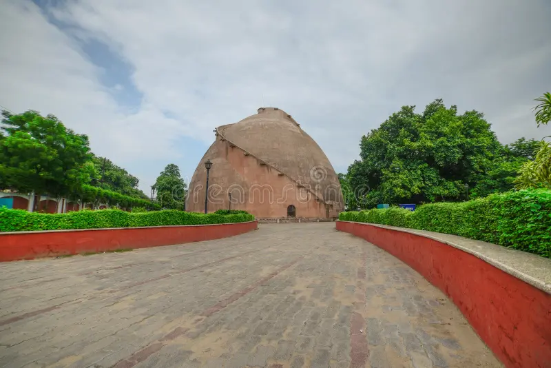
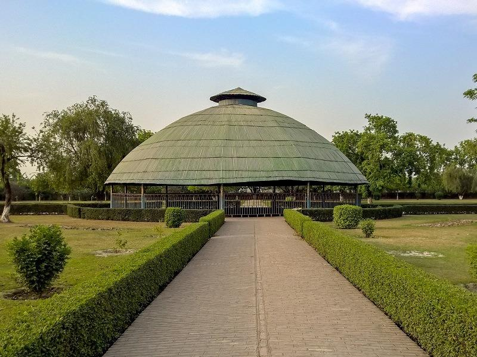

Patna
Capital city of Bihar. Famous for Golghar,
Patna Sahib and historical places.
Read More

Gaya
Famous for Bodh Gaya, Mahabodhi Temple
and religious tourism.
Read More

Nalanda
Ancient education center famous for Nalanda
University and Rajgir.
Read More

Vaishali
One of the oldest republics of India and
important historical place.
Read More

Bhagalpur
Known as Silk City of Bihar. Famous for Bhagalpur Silk,
Vikramshila University and Ganga River tourism.
Read More

Muzaffarpur
Famous for Shahi Litchi and agricultural production.
It is an important city of North Bihar.
Read More

Darbhanga
Center of Mithila culture. Famous for Darbhanga Palace,
Madhubani art and Maithili traditions.
Read More

Gopalganj
Gopalganj is known for agriculture,
historical places and cultural heritage.
It is an important district of North Bihar.
Read More

Rohtas
Historical district famous for Rohtasgarh Fort,
Sher Shah Suri Tomb and natural beauty.
Read More

Bhojpur
Known for Veer Kunwar Singh and its historical
importance during the freedom movement.
Read More

West Champaran
Famous for Valmiki National Park, forests and
Champaran Satyagraha history.
Read More

East Champaran
Known for Motihari city and Mahatma Gandhi's
Champaran movement.
Read More

Sitamarhi
Associated with Goddess Sita. Famous for Janaki Temple
and religious tourism.
Read More

Samastipur
Agriculture based district famous for railways,
farming and cultural heritage.
Read More

Munger
Famous for Munger Fort, Yoga University and
historical places.
Read More

Purnia
Important district of Seemanchal region known for
agriculture and natural beauty.
Read More

Araria
Araria is an important district of Seemanchal region.
Famous for agriculture, rivers and natural beauty.
Read More

Arwal
Arwal is one of the newest districts of Bihar.
Known for agriculture and rural development.
Read More

Aurangabad
Famous for Deo Sun Temple, historical places
and cultural heritage.
Read More

Banka
Known for Mandar Hill, religious places and
natural beauty.
Read More

Begusarai
Known as Industrial city of Bihar.
Famous for Barauni Refinery and agriculture.
Read More

Buxar
Historical district famous for Battle of Buxar
and religious importance.
Read More

Jamui
Famous for historical places, forests and
natural attractions.
Read More

Jehanabad
Known for Barabar Caves and ancient historical
sites.
Read More

Kaimur
Famous for Kaimur Hills, waterfalls and
natural beauty.
Read More

Katihar
Important railway and agricultural district
of Bihar.
Read More

Khagaria
Known for rivers, farming and natural landscape.
Read More

Kishanganj
Famous for tea gardens, forests and natural
beauty.
Read More

Lakhisarai
Known for historical sites and religious places.
Read More

Madhepura
Agriculture based district of Kosi region.
Read More

Madhubani
World famous for Madhubani painting and
Mithila culture.
Read More

Nawada
Famous for Kakolat Waterfall and historical
places.
Read More

Saharsa
Important district of Kosi region known for
culture and agriculture.
Read More

Sheikhpura
Known for agriculture and historical importance.
Read More

Sheohar
One of the smallest districts of Bihar.
Known for peaceful environment.
Read More

Siwan
Known for freedom movement history and
cultural heritage.
Read More

Supaul
Famous for Kosi River and agriculture.
Read More

Saran
Headquarter Chhapra. Famous for historical
and cultural places.
Read More